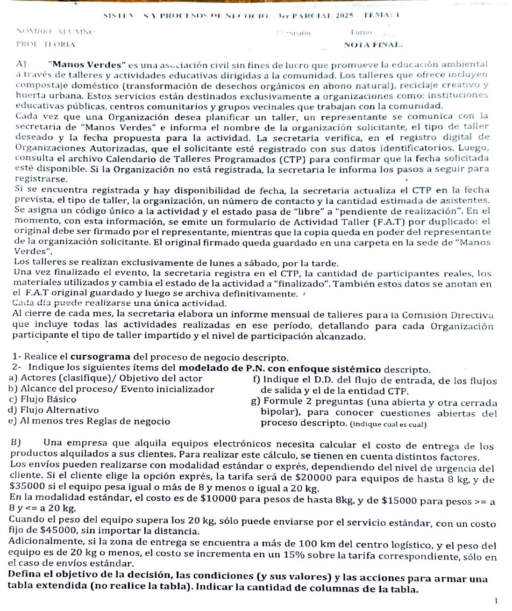
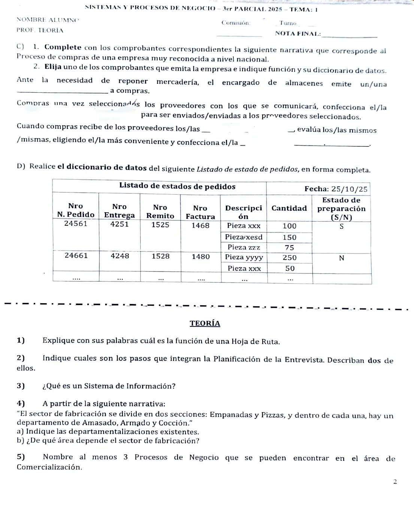

3° parcial, 25/10/2025
3° parcial, 25/10/2025
Enunciado




Preguntas con opciones
Salen de este examen, adaptadas. Dejalas para el final, porque las opciones pueden dar pistas.
- 1
¿Cuál de estos NO es un paso de la planificación de la entrevista?
Se tomó: 3° parcial 25/10/25, adaptada
La grabación es una forma de registrar la entrevista, que viene después. Los cinco pasos de planificación son antecedentes, objetivos, entrevistados, preparación del entrevistado y tipo y estructura de las preguntas.
- 2
Una pregunta cerrada que solo admite dos respuestas, como sí o no, se llama
Se tomó: 3° parcial 25/10/25, adaptada
La cerrada bipolar es la más limitativa. Una tendenciosa empuja hacia una respuesta y una doble mete dos preguntas en una.
- 3
Según el apunte, ¿cuál de estos es un proceso de negocio del área de ventas y marketing?
Se tomó: 3° parcial 25/10/25, adaptada
Los otros pertenecen a finanzas y contabilidad (pagar a acreedores, crear estados financieros) y a manufactura y producción (ensamblar el producto).
- 4
La hoja de ruta se utiliza para
Se tomó: 3° parcial 25/10/25, adaptada
La usan los repartidores para entregar pedidos y los vendedores para visitar clientes. La prueba de entrega es el remito.
- 5
Avisar con tiempo al entrevistado y reservar un horario para la reunión corresponde al paso
Se tomó: 3° parcial 25/10/25, adaptada
Es la preparación del entrevistado. El apunte aclara que las entrevistas duran entre quince minutos y una hora.
- 6
En una tabla de entrada extendida, una variable con tres rangos de valores
Se tomó: 3° parcial 25/10/25, adaptada
En la extendida se escriben los valores explícitos. La que obliga a tres condiciones es la de entrada limitada.
Propuesta de respuesta
Respuesta no verificada. La propuso Luta Studios con inteligencia artificial y ningún docente la revisó. Puede tener errores.
A.1. Cursograma
Tocá el dibujo para verlo en pantalla completa.
A.2. Proceso de negocio con enfoque sistémico
Proceso de negocio. Programación de talleres educativos.
Objetivo del actor. La organización quiere programar un taller educativo de Manos Verdes en la fecha que propone.
Actores.
- Principal. El representante de la organización solicitante.
- De apoyo. La secretaría de Manos Verdes.
- Pasivo. La Comisión Directiva, que recibe el informe mensual.
Alcance del proceso. Desde que el representante de una organización se comunica con la secretaría para planificar un taller hasta que la secretaría elabora el informe mensual para la Comisión Directiva.
Evento externo iniciador. Una organización desea planificar un taller y su representante se comunica con la secretaría.
Flujo básico.
- El Representante se comunica con la Secretaría e informa el nombre de la organización, el tipo de taller y la fecha propuesta.
- La Secretaría verifica en el registro de Organizaciones Autorizadas que la organización esté registrada.
- La Secretaría consulta el archivo CTP para confirmar que la fecha esté disponible.
- La Secretaría actualiza el CTP en la fecha prevista con el tipo de taller, la organización, un número de contacto y la cantidad estimada de asistentes.
- La Secretaría asigna un código único a la actividad y cambia su estado de «libre» a «pendiente de realización».
- La Secretaría emite el F.A.T. por duplicado.
- El Representante firma el original del F.A.T. y se queda con la copia.
- La Secretaría guarda el original firmado en una carpeta de la sede.
- La Secretaría registra en el CTP, una vez finalizado el taller, la cantidad de participantes reales y los materiales utilizados, y cambia el estado a «finalizado».
- La Secretaría anota esos datos en el F.A.T. original y lo archiva definitivamente.
- La Secretaría elabora al cierre de cada mes el informe mensual de talleres para la Comisión Directiva.
Alternativas.
- Paso 2. La organización no está registrada. La Secretaría le informa al Representante los pasos para registrarse.
- Paso 3. La fecha no está disponible, porque ya hay una actividad ese día o cae domingo. La minuta no dice qué se hace, y va a las cuestiones abiertas.
Reglas de negocio.
| Regla | Tipo |
|---|---|
| Solo se programan talleres para organizaciones registradas en Organizaciones Autorizadas | AR |
| Los talleres se realizan solo de lunes a sábado, por la tarde | AR |
| Cada día puede realizarse una única actividad | AR |
| Al confirmar la fecha, la actividad recibe un código único y pasa de «libre» a «pendiente de realización» | AD |
| Al finalizar el taller, la actividad pasa a «finalizado» | AD |
| Al cierre de cada mes se elabora el informe mensual para la Comisión Directiva | AD |
Diccionario de datos.
Flujo de datos de entrada
E1 pedido-taller = nombre-organización + tipo-taller(D) + fecha-propuesta
Flujos de datos de salida
S1 pasos-registro = 1{ paso }N
S2 fat = cod-actividad + fecha + tipo-taller(D) + nombre-organización + nro-contacto
+ cant-estimada-asistentes + firma-representante
+ (cant-participantes-reales + 1{ material }N) ** se anotan después del taller **
S3 informe-mensual = mes + 1{ nombre-organización + 1{ cod-actividad + fecha + tipo-taller(D)
+ cant-participantes-reales + nivel-participación }N }N
Entidad
CTP = fecha + estado(D) + (cod-actividad + tipo-taller(D) + nombre-organización + nro-contacto
+ cant-estimada-asistentes + (cant-participantes-reales + 1{ material }N))
Elementos de datos discretos
Atributo: tipo-taller (D)
Descripción: Tipo de taller
Valores posibles: Compostaje doméstico, reciclaje creativo, huerta urbana
Atributo: estado (D)
Descripción: Estado de la actividad en esa fecha
Valores posibles: Libre, pendiente de realización, finalizadoCuestiones abiertas.
- Abierta, a la Secretaría. ¿Qué se hace cuando la fecha propuesta no está disponible?
- Cerrada bipolar, a la Secretaría. ¿Se puede cancelar un taller que está pendiente de realización?
B. Decisión programada, tabla extendida
Objetivo. Determinar el costo de entrega de los productos alquilados.
| Condición | Valores | |
|---|---|---|
C1 | Modalidad | Estándar, exprés |
C2 | Peso del equipo | Hasta 8 kg, más de 8 kg y hasta 20 kg, más de 20 kg |
C3 | Distancia al centro logístico | Hasta 100 km, más de 100 km |
| Acción | Valores | |
|---|---|---|
A1 | Cobrar la tarifa | $10000, $15000, $20000, $35000, $45000 |
A2 | Recargar un 15 % sobre la tarifa | Sí, no |
A3 | No enviar por exprés | Sí, no |
Cantidad de columnas. .
El recargo va solo en estándar, con más de 100 km y hasta 20 kg. Más de 20 kg va siempre por estándar a $45000, sin importar la distancia.
C.1. Comprobantes del proceso de compras
Ante la necesidad de reponer mercadería, el encargado de almacenes emite una nota de requisición a compras.
Compras, una vez seleccionados los proveedores con los que se comunicará, confecciona los pedidos de cotización para ser enviados a los proveedores seleccionados.
Cuando compras recibe de los proveedores las cotizaciones, evalúa las mismas, eligiendo la más conveniente, y confecciona la orden de compra.
C.2. Un comprobante que emite la empresa
Orden de compra. Sirve para solicitar al proveedor adjudicado lo cotizado. Es prenumerada. El original va al proveedor y el duplicado queda en Compras.
orden-compra = nro-OC + fecha + datos-proveedor(e)
+ 1{ cod-artículo + descripción + cantidad + precio-unitario }N
+ condición-pago + plazo-entrega
datos-proveedor(e) = razón-social + CUIT + domicilioD. Listado de estados de pedidos
listado-estados-pedidos = fecha
+ 1{ nro-pedido + nro-entrega + nro-remito + nro-factura
+ 1{ descripción + cantidad }N
+ estado-preparación(D) }N
Atributo: estado-preparación (D)
Descripción: Si el pedido ya está preparado
Valores posibles: S preparado, N sin prepararCada pedido tiene un solo número de entrega, remito y factura, y uno o más renglones de pieza y cantidad. Por eso hay una iteración adentro de otra.
Teoría
1. Hoja de ruta. Tiene las instrucciones de un viaje para recorrer de la mejor forma el camino desde el origen hasta cada destino. La usan los repartidores para entregar pedidos y los vendedores para visitar clientes.
2. Planificación de la entrevista. Lectura de antecedentes, establecimiento de los objetivos de la entrevista, selección de los entrevistados, preparación del entrevistado y selección del tipo y la estructura de las preguntas.
- Lectura de antecedentes. Conocer de antemano al entrevistado y a la organización.
- Preparación del entrevistado. Coordinar día, hora y lugar con anticipación. Una entrevista dura entre quince minutos y una hora.
3. Sistema de información. Un conjunto de componentes interrelacionados que reúne (u obtiene), procesa, almacena y distribuye información para apoyar a la toma de decisiones y el control en una organización.
4. Fabricación.
| Dónde | Qué agrupa | Tipo |
|---|---|---|
| Fabricación | Empanadas y Pizzas | Por productos |
| Empanadas y Pizzas | Amasado, Armado y Cocción | Por procesos |
Fabricación depende del área de Producción.
5. Procesos de Comercialización. Identificar a los clientes, dar a conocer el producto a los clientes y vender el producto. También tomar el pedido del cliente, analizar su crédito y facturar.
Respuesta no verificada. Puede tener errores.
Se armó con la página del 2° parcial (plantilla de enfoque sistémico, diccionario de datos, cuestiones abiertas con la pregunta bipolar, símbolos y reglas del cursograma, entrevista y sistema de información), la del 1° parcial (procedimiento de compras y de ventas, comprobantes, hoja de ruta y departamentalización), la del 3° parcial (entrada extendida y cantidad de reglas) y la del final (procesos por área funcional).
Quedó en duda: Las tarifas se pisan en 8 kg, porque la hoja dice «hasta 8 kg» y «igual o más de 8» para el rango siguiente. Se tomó que 8 kg va en el primero. La hoja no dice qué pasa si piden exprés con más de 20 kg, y por eso va la acción «No enviar por exprés». La minuta no dice cómo se calcula el «nivel de participación» del informe. En el cursograma, la página no muestra cómo se graba un archivo digital, y la carpeta de la sede va como archivo transitorio porque el F.A.T. sale de ahí después del taller. Los procesos de Comercialización salen de la tabla de Ventas y marketing del apunte, que no usa ese nombre.
¿Cómo te fue?
Marcá cada tema del examen. Las preguntas con opciones ya se corrigieron solas.
- CursogramaSímbolos, en 2° parcial
- Enfoque sistémicoEl proceso de negocio con enfoque sistémico, en 2° parcial
- Tabla extendidaTabla de decisión (decisiones programadas), en 3° parcial
- ComprobantesClasificación de los comprobantes, en 1° parcial
- Diccionario de datosDiccionario de datos, en 2° parcial
- TeoríaPreguntas de teoría con respuesta en el apunte, en 1° parcial